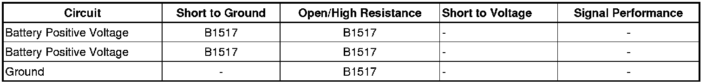

B1517
DTC B1517
Diagnostic Instructions
* Perform the Diagnostic System Check - Vehicle (Initial Inspection and Diagnostic Overview) prior to using this diagnostic procedure.
* Review Strategy Based Diagnosis (Initial Inspection and Diagnostic Overview) for an overview of the diagnostic approach.
* Diagnostic Procedure Instructions (Initial Inspection and Diagnostic Overview) provides an overview of each diagnostic category.
DTC Descriptors
DTC B1517 03
- Battery Voltage Below Threshold
DTC B1517 07
- Battery Voltage Above Threshold
DTC B1517 5A
- Battery Voltage Plausibility Failure
Diagnostic Fault Information

Circuit/System Description
The body control module (BCM) has designated circuits for monitoring vehicle system voltage. The BCM monitors the system voltage to ensure that the voltage stays within the proper range. Damage to components, and incorrect data may occur when the voltage is out of range. The BCM monitors the system voltage over an extended length of time. If the BCM detects the system voltage is outside an expected range for the calibrated length of time, or the BCM battery sense circuits differ by 2 volts, DTC B1517 will set. Other modules also monitor system voltage the system voltage message is sent to the other modules and will default to 12.9 volts.
Conditions for Running the DTC
The DTC shall run only if the BCM has power, ground, and the ignition is not in the START mode. This DTC shall execute regardless of battery voltage.
Conditions for Setting the DTC
B1517 03
The battery voltage falls below 11 volts, engine speed greater than 1,100 RPM for 15 seconds.
B1517 07
The battery voltage is greater than 16 volts, engine speed greater than 1,00 RPM for 15 seconds.
B1517 5A
The battery voltage differs by 2 volts on the BCM battery sense circuits for 10 seconds.
Action Taken When the DTC Sets
The driver information center (DIC) displays the SERVICE BATTERY CHARGING SYSTEM warning message and the Charge Indicator on the instrument panel cluster (IPC) illuminates.
Conditions for Clearing the DTC
* The DTC will clear current status when fault is no longer present.
* The history DTC will clear after 50 consecutive ignition cycles have occurred without a malfunction.
Diagnostic Aids
Important: With any module voltage performance DTC, always perform the Charging System Test (Charging System Test) to ensure the charging system is functioning properly.
Reference Information
Schematic Reference
Starting and Charging Schematics ([1][2]Electrical Diagrams)
Connector End View Reference
Component Connector End Views (Connector Views)
Description and Operation
Charging System Description and Operation (Description and Operation)
Electrical Information Reference
* Circuit Testing (Component Tests and General Diagnostics)
* Connector Repairs (Component Tests and General Diagnostics)
* Testing for Intermittent Conditions and Poor Connections (Component Tests and General Diagnostics)
* Wiring Repairs (Component Tests and General Diagnostics)
Scan Tool Reference
Control Module References (Programming and Relearning)for scan tool information
Circuit/System Testing
B1517 03, B1517 07
1. If the DTC is history, refer to Charging System Test (Charging System Test) .
2. Ignition On, record the voltage at the battery terminals. Observe the scan tool BCM battery positive voltage parameter. The battery terminal and BCM parameter should not differ by more than 2 volts.
• If not within the specified range, test the B+ circuits of the BCM X3 terminal 3 and X4 terminal 10 to ground circuit X4 terminal 9.
• If not within the specified range, test the B+ circuits for a short to ground or an open/high resistance and the ground circuit for an open/high resistance.
3. If all the circuits test normal, test or replace the BCM.
B1517 5A
1. Verify that DTC B1517 5A is set as current.
2. Ignition OFF, disconnect the harness connectors X3 and X4 from the BCM.
3. Ignition OFF, test for less than 1.0 ohm of resistance between the ground circuit X4 terminal 9 and ground.
• If not within the specified range, test the circuit for an open/high resistance.
4. Ignition On, test the B+ circuits X3 terminal 3 and X4 terminal 10 to the ground circuit X4 terminal 9. The B+ circuits should not differ by more than 2 volts.
• If not within the specified range, test the circuit for a short to ground or an open/high resistance.
5. If all circuits test normal, replace the BCM.
Repair Instructions
Perform the Diagnostic Repair Verification (Verification Tests) after completing the diagnostic procedure.
Control Module References (Programming and Relearning)for BCM replacement, setup, and programming.